<!DOCTYPE html>
<html lang="en">
  <head>
    <meta charset="utf-8" />
    <meta name="viewport" content="width=device-width, initial-scale=1.0, maximum-scale=1.0, user-scalable=no" />

    <title>SFB-AstroML-Day 2020</title>
    <link rel="shortcut icon" href="./favicon.ico"/>
    <link rel="stylesheet" href="./dist/reveal.css" />
    <link rel="stylesheet" href="_assets/css/modified-tufte.css" id="theme" />
    <link rel="stylesheet" href="./css/highlight/solarized-light.css" />

  </head>
  <body>
    <div class="reveal">
      <div class="slides"><section  data-markdown><script type="text/template">

# Semi-Supervised Machine Learning for Molecular Spectroscopy

### Kelvin Lee

#### SFB AstroML Day

<figure>
	
	
</figure>
</script></section><section ><section data-markdown><script type="text/template">
# Machine Learning in Spectroscopy

<div style="padding-top: 200px"> 

<div class="column" style="width: 30%">
  <figure>
  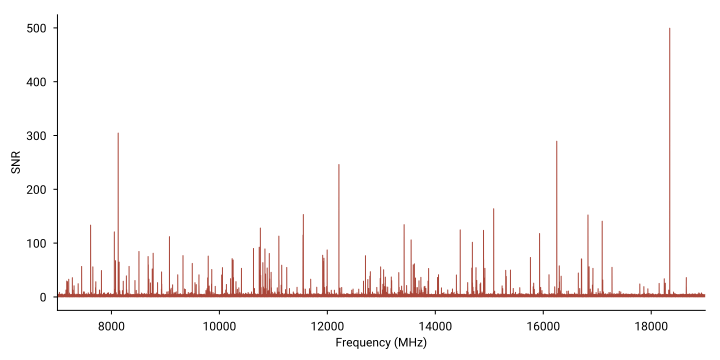
  <figcaption> Large data volumes </figcaption>
  </figure>
</div>

<div class="column" style="width: 20%">
  <figure>

  <p style="display: block; margin: auto; width: 50%; padding-top: 60px; padding-bottom: 60px;"> $\hat{H} \Psi = E\Psi$ </p>

  <figcaption> Approximations to intractable problems </figcaption>
  </figure>
</div>

<div class="column">
  <figure>
  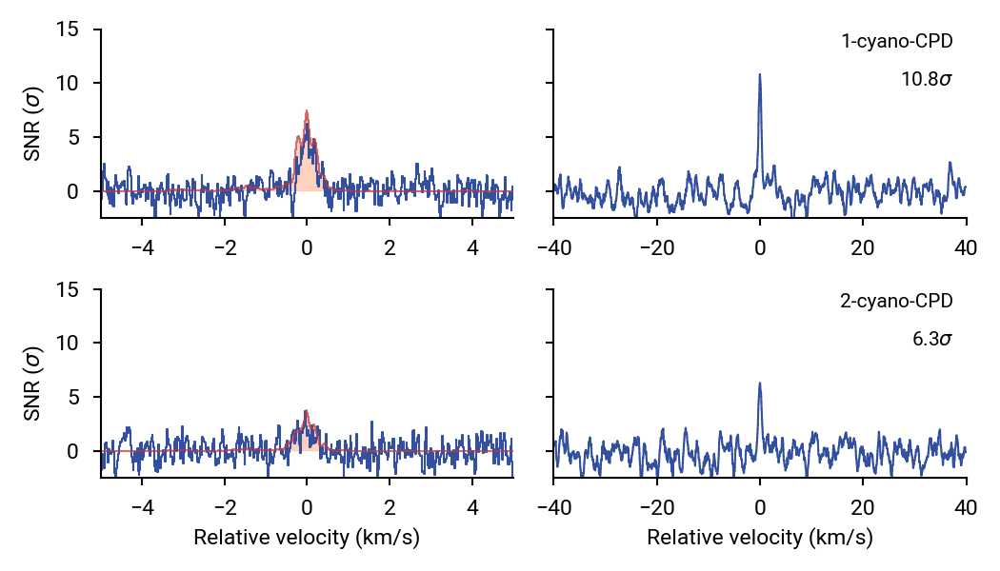
  <figcaption>  Simulations of rare events </figcaption>
  </figure>
</div>

</div>
</script></section><section data-markdown><script type="text/template">
# Automation through Machine Learning

<div id="left" style="padding-top: 50px">
  <figure>
    
  </figure>
</div>

<div class="fragment" id="right" style="padding-top: 200px">
  There is a hidden dimension to the problem:

  > How _reliable_ is the automation?
</div>
</script></section><section data-markdown><script type="text/template">
# Reliable machine learning

<div id="left" style="padding-top: 100px">

- How reliable are machine (deep) learning models?
- Model overconfidence and inaccuracies with unseen data
- Need to make models robust by design

<p class="pop fragment"> Take the machine learning off autopilot! </p>

<div class="fragment">

  Semi-supervised learning to get best of both worlds:

  - Human and physical intuition
  - Model uncertainty
  - Generalization

</div>

</div>

<div id="right">

<figure style="display: block; margin: auto; width: 80%">

<figcaption>Goodfellow, arXiv: 1412.6572</figcaption>

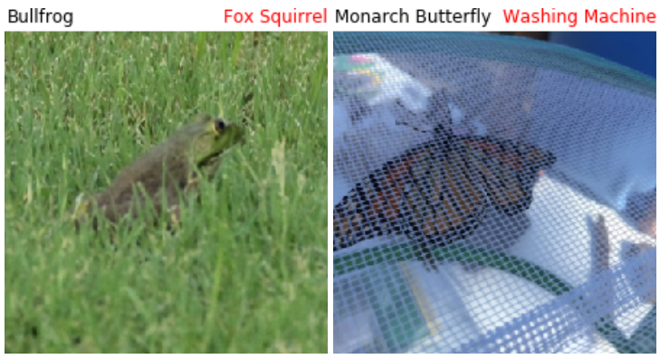
<figcaption>Hendrycks, arXiv: 1907.07174</figcaption>

</figure>

</div>
</script></section><section data-markdown><script type="text/template">
# Applications

<div style="padding-top: 170px">

<div style="width: 40%; display: inline-block">

  <figure>
    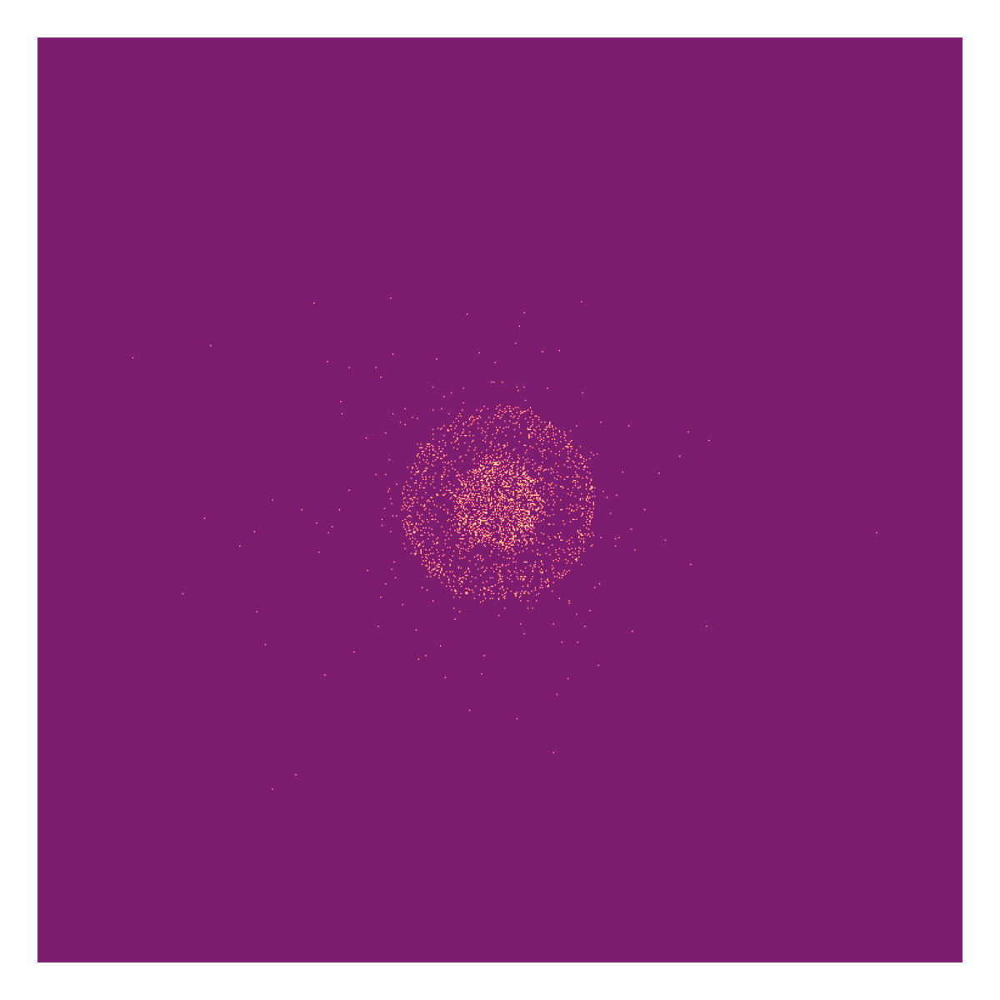
    <figcaption>Ion imaging</figcaption>
  </figure>

</div>

<div style="width: 40%; display: inline-block;">

<figure>
  
  <figcaption>Spectroscopic line assignment and analysis</figcaption>
</figure>

</div>

</div>
</script></section></section><section ><section data-markdown><script type="text/template">
# Ion imaging

<div id="left">

- Measuring nascent charged particle velocity
- Infer dynamics from radial and angular (anisotropy) distributions

<div class="fragment">

- Sensitivity of reconstruction to noise and affine transformations
- Image resolution
- Low signal counts
- Solve these problems with deep convolutional neural networks!

</div>

<div class="fragment">
  
  <figure>
    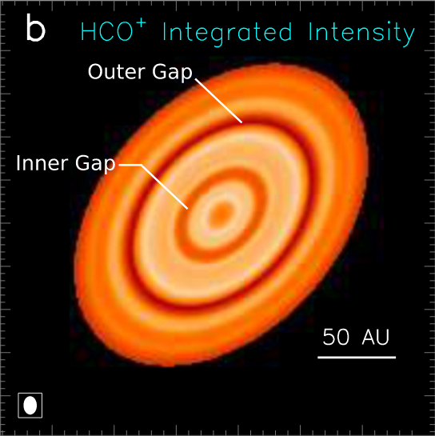
    <figcaption>Many of the same challenges in astronomical imaging!</figcaption>
  </figure>
  </div>

</div>

<div id="right">
  <figure>
    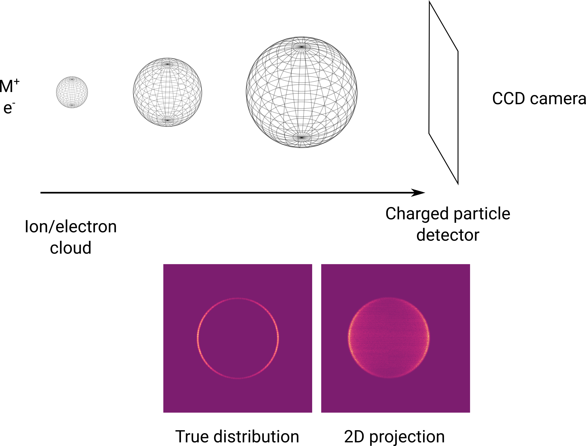
  </figure>
</div>
</script></section><section data-markdown><script type="text/template">
# Autoencoder models

<div id="left">

- Encoder and decoder models learn cooperatively to reconstruct input data from compression
  - Encoder learns to extract useful information
  - Decoder learns to recreate original image
- Apply model to reconstruct true 3D distribution from 2D projections

</div>

<div id="right">
  <figure>

  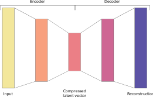

  </figure>
</div>

<div class="fragment">

$\mathscr{L}_\theta = \mathrm{MSE}(I, I_\theta)$

> Simple reconstruction loss between input image $I$ and predicted image $I_\theta$

</div>
</script></section><section data-markdown><script type="text/template">
<div>
  <figure>
    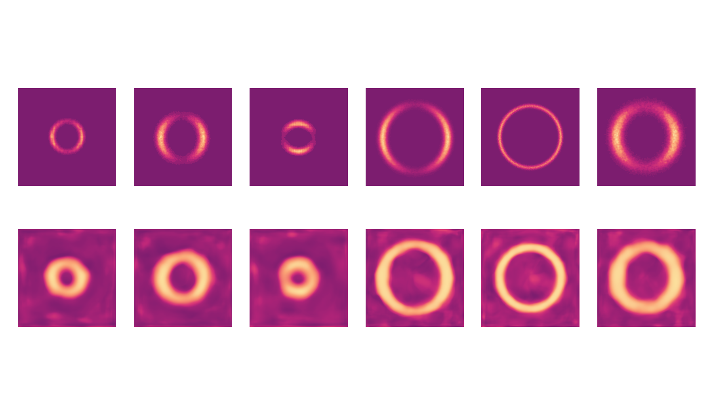
    <figcaption>Ten epochs</figcaption>
  </figure>
  </div>
</script></section><section data-markdown><script type="text/template">
# Semi-supervised autoencoder

<div id="left">

Convergence is slow, and anisotropy not captured well

<div class="fragment">

$\mathscr{L}_\theta = \mathrm{MSE}(I, I_\theta) + \gamma[\mathrm{MSE}(r(I), r'_\theta) + \mathrm{MSE}(r(I), r_\theta(I_\theta))]$

> Loss forces encoder to extract desired radial distribution
  
1. What the encoder _thinks_ the radial distribution is
2. What the actual radial distribution is

Hyperparameter $\gamma$ tunes relative importance

</div>

</div>

<div id="right" class="fragment">

<figure>
  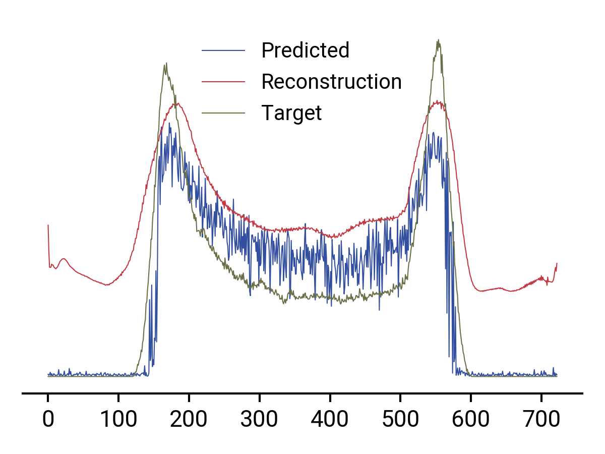
  <figcaption>Fewer epochs, better reconstruction!</figcaption>
</figure>

</div>
</script></section><section data-markdown><script type="text/template">
<div>
  <figure>
    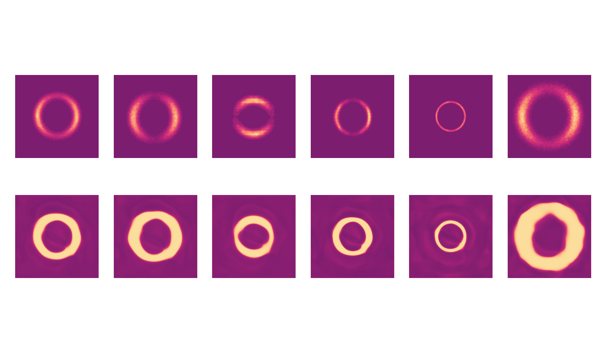
    <figcaption>$\gamma = 0.3$, 10 epochs</figcaption>
  </figure>
  </div>
</script></section><section data-markdown><script type="text/template">
# Next steps

> Reconstructing inputs is not as useful as it can be!

<div id="left">

<div class="fragment" style="padding-top: 200px">
  <ol>
    <li>Image de-noising and focusing</li>
    <li>Pixelwise conditional reconstruction (PixelCNN)</li>
    <li>Quantifiable uncertainty ($\beta$-VAE)</li>
    <li>Super-resolution imaging</li>
    <li>Image segmentation</li>
  </ol>
</div>
</div>

<div id="right" class="fragment">

  <figure>
    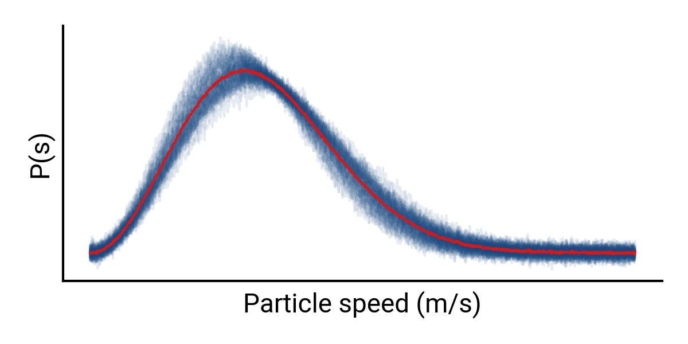
  </figure>

  <figure>
    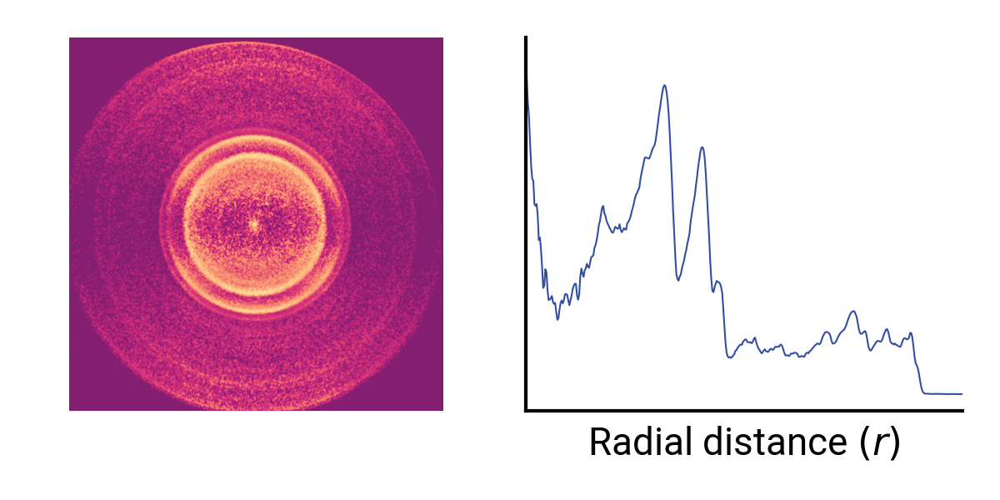
  </figure>

</div>
</script></section><section data-markdown><script type="text/template">
<div>
  <figure>
    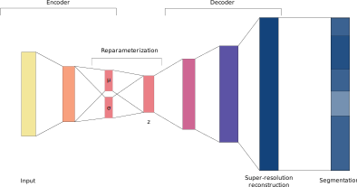
  </figure>

  > Generative model for low-signal images, upsampling, and segmentation
</div>
</script></section></section><section ><section data-markdown><script type="text/template">
# Spectroscopic analysis

<div id="left">

- Radio band molecular line surveys
- Molecules as sensitive probes of the ISM
  - Temperature and density estimation
- From molecules to planets and stars
- Origins of life

<div class="fragment" data-fragment-index=1>

> Spectra don't come with labels!

High resolution and bandwidth spectra now routine; we are drowning in data!

</div>

</div>

<div id="right" class="fragment" data-fragment-index=1>
  <div>
    <embed src="figures/benzene-spectrum.html" width=900px height=500px>
  </div>
</div>
</script></section><section data-markdown><script type="text/template">
# Spectroscopic deep learning

> Designing intelligent systems to automate spectroscopic analysis

<div class="fragment" style="display: block; margin: auto; width: 50%; padding-top: 150px">

For a given congested spectrum:

1. Which features belong to the same molecule(s)?
2. What is the identity of unknown signal carriers?

</div>
</script></section><section data-markdown><script type="text/template">
# Spectral autoencoder

<div id="left">
  
  > Train model to _understand_ molecular spectra

<div class="fragment" style="padding-top: 30px">

  Semi-supervised autoencoder learning of sequences with three targets, for observed frequencies $\nu$
  
  - Reproduce current frequency
  - Predict next frequency
  - Classify spectral type ($a$, $b$, $c$-type)

</div>

</div>

<div id="right">

<figure>
  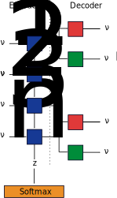
</figure>

</div>
</script></section><section data-markdown><script type="text/template">
# Spectra, or noise?

<div id="left">

<figure>
  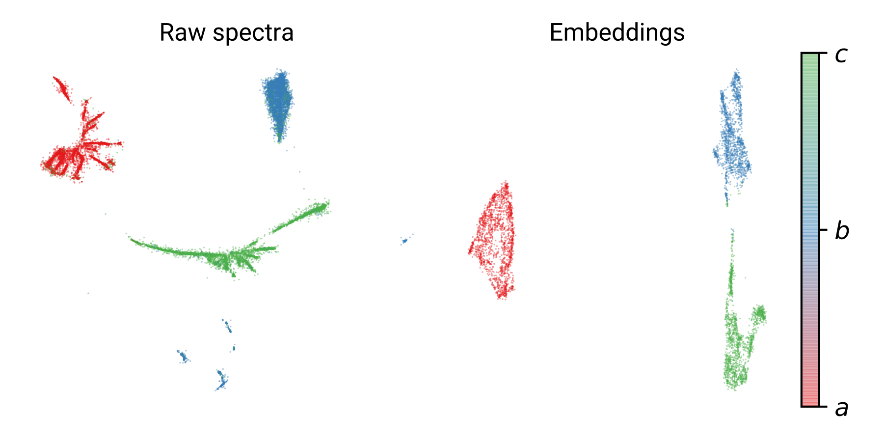
  <figcaption>UMAP embedding visualization</figcaption>
</figure>

- 99% spectral type classification accuracy
- Reproduction error of 0.1% (100 MHz at 100 GHz)
- Prediction error of 0.2%

<div class="fragment" data-fragment-index=1>

- 97% discriminator classification accuracy

</div>

</div>

<div id="right" style="padding-left: 50px" class="fragment" data-fragment-index=1>
  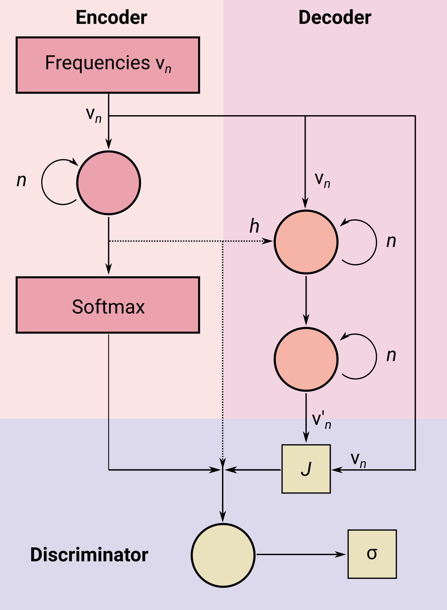
</div>
</script></section><section data-markdown><script type="text/template">
# Computer spectroscopist

> Deep reinforcement learning for spectroscopic assignment and segmentation

<div id="left">

<div>

  1. Collect spectra
  2. Screen spectra for molecular features
  3. Fit transitions to rotational Hamiltonians
  4. Identify carriers from rotational parameters

</div>

<div class="fragment" data-fragment-index=1>

  > Replace (2) with actor-critic model to significantly narrow down candidate sequences

  > See McCarthy & Lee arXiv: 2003.12388 for (4)

</div>

</div>

<div id="right" class="fragment" data-fragment-index=1>

  <figure style="padding-top: 100px">
    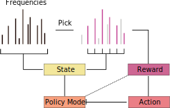
  </figure>

</div>
</script></section></section><section ><section data-markdown><script type="text/template">
# Take home messages

<div style="padding-top: 200px">

> Deep learning can automate significant portions of conventional spectroscopic workflows.

> Models developed for spectroscopy useful for laboratory and observational data.

> Learning needs to be semi-supervised—for convergence and for reliability.

</div>
</script></section><section data-markdown><script type="text/template">
# Acknowledgements

<div id="left">

<figure style="padding-left: 50px; padding-top: 100px">
  
  <figcaption>Stephen Kocheril (Brown) </figcaption>
</figure>

</div>

<div id="right">

  <figure>
    
    <figcaption>Michael McCarthy (CfA) </figcaption>
  </figure>

  <figure style="padding-left: 50px">
    
    <figcaption>Brett McGuire (MIT) </figcaption>
  </figure>

  <div style="padding-top: 50px">
  <figure>
    
  </figure>

  <figure style="padding-left: 50px">
    
  </figure>
  </div>

</div>
</script></section><section data-markdown><script type="text/template">
<div class="grid sidebar">
    <h1> Thank you! </h1>
</div>

<div class="l-multiple" style="padding-top: 200px">
    <div class="img-frame">
        
        <span>@cmmmsubmm</span>
    </div>
    <div class="img-frame">
        
        <span>laserkelvin.github.io</span>
    </div>
    <div class="img-frame">
      
      <span>@laserkelvin</span>
    </div>
</div>

<footer>

<!-- Copyright © 2020 Kelvin Lee -->

</footer>
</script></section></section></div>
    </div>

    <script src="./dist/reveal.js"></script>

    <script src="./plugin/markdown/markdown.js"></script>
    <script src="./plugin/highlight/highlight.js"></script>
    <script src="./plugin/zoom/zoom.js"></script>
    <script src="./plugin/notes/notes.js"></script>
    <script src="./plugin/math/math.js"></script>
    <script>
      function extend() {
        var target = {};
        for (var i = 0; i < arguments.length; i++) {
          var source = arguments[i];
          for (var key in source) {
            if (source.hasOwnProperty(key)) {
              target[key] = source[key];
            }
          }
        }
        return target;
      }

      // default options to init reveal.js
      var defaultOptions = {
        controls: true,
        progress: true,
        history: true,
        center: true,
        transition: 'default', // none/fade/slide/convex/concave/zoom
        plugins: [
          RevealMarkdown,
          RevealHighlight,
          RevealZoom,
          RevealNotes,
          RevealMath
        ]
      };

      // options from URL query string
      var queryOptions = Reveal().getQueryHash() || {};

      var options = extend(defaultOptions, {"transition":"fade","transition-speed":"fast","width":"100%","height":"100%","center":false,"margin":0,"minScale":1,"maxScale":1,"symbolperslideprogress":{"position":"left","align":"vertical","symbolColor":"","symbolActiveColor":""},"menu":{"side":"left","width":"normal"},"tableofcontents":{"title":"","position":2,"titleTag":"h1","titleTagSelector":"h1, h2, h3","ignoreFirstSlide":true}}, queryOptions);
    </script>

    <script src="./_assets/js/menu.js"></script>
    <script src="./_assets/js/tableofcontents.js"></script>

    <script>
      Reveal.initialize(options);
    </script>
  </body>
</html>
